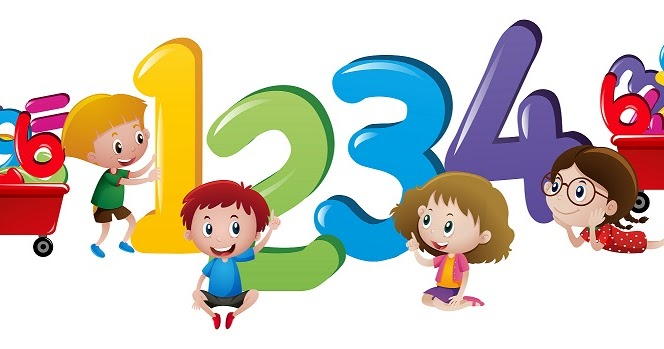
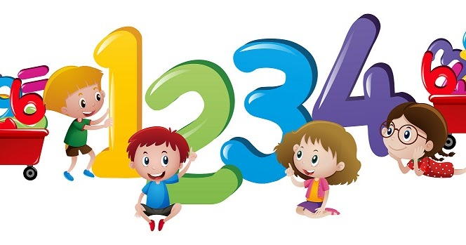

La suma o adición es la operación matemática que resulta al reunir en una sola varias cantidades.
Los números que se suman se llaman sumandos y el resultado suma o total.
Para su notación se emplea entre los sumandos el signo + que se lee "más".

En la práctica de la suma podemos distinguir tres casos:
La suma de dos números de una sola cifra se halla mentalmente, una vez que se ha aprendido
la tabla de la suma:
Se agregan las unidades del segundo número a las del primero y, caso que no pasen de nueve,
los otros números del primer sumando no varían.
533 + 5 = 538
Si la suma pasa a la de 9, se añade una unidad al número que señala las decenas, en el primer sumando.
533 + 9 = 542
Se colocan los números unos debajo de otros, de modo que las unidades queden debajo de las unidades,
las decenas debajo o de las decenas, etc.

Se suman las unidades de la primera columna, si es un número de una cifra, se escribe al pie de la columna.

Y si tiene más de una cifra, se escribe al pie de la columna únicamente la cifra de las unidades,
añadiendo la decenas a la columna siguiente, procediendo a continuación de igual forma.

--Ponte a prueba--
Practicar